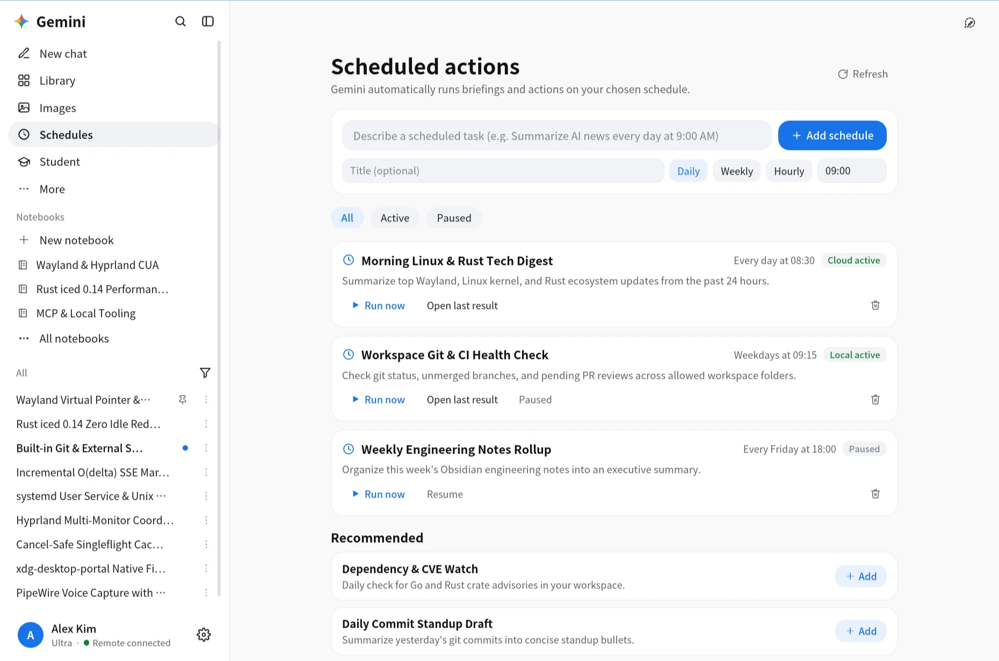

SCHEDULES · KEYBOARD-FIRST
예약된 작업과 키보드 중심 탐색Scheduled Actions & Instant Shortcuts
클라우드·로컬·추천 예약을 한곳에서 관리하고 완료 시 notify-send로 데스크톱 알림을 띄웁니다. 통합 검색으로 과거 대화 본문의 정확한 턴까지 바로 점프합니다.
Manage cloud, local, and recommended schedules with notify-send alerts, plus full-text search that jumps straight to the matching turn.